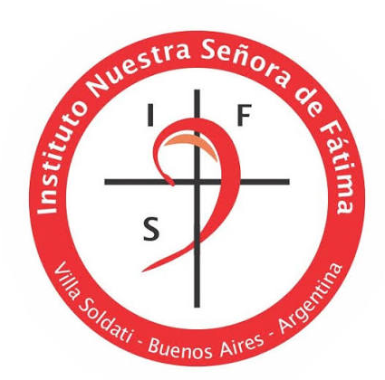

INSTITUTO NUESTRA SEÑORA DE FÁTIMA
5.º AÑO · BACHILLER EN INFORMÁTICA · BUENOS AIRES

✔ PRODUCCIÓN FINALIZADA · CICLO LECTIVO 2026
CERTIFICADO DE CREACIÓN Y EGRESO FINAL
> creator --certified-name:
Egresado/a de la Promoción 2026
Por haber imaginado, diseñado, producido y comunicado con éxito cada proyecto de TIC Orientado —integrando Inteligencia Artificial, diseño en Canva, podcast y nuevas tecnologías—, demostrando que la creatividad y la voz propia son la base para proyectar su mejor versión.
ESTADO DEL PROYECTO
PUBLICADO (100%)
⚡
HERRAMIENTAS DOMINADAS
IA · CANVA · PODCAST
⚡
PRÓXIMO EPISODIO
UN NUEVO COMIENZO
Prof. Muñoz Laura
Docente
TIC Orientado
PROMOCIÓN
2026
5.º BACHILLER
18 de noviembre de 2026
Fecha
CABA, Argentina